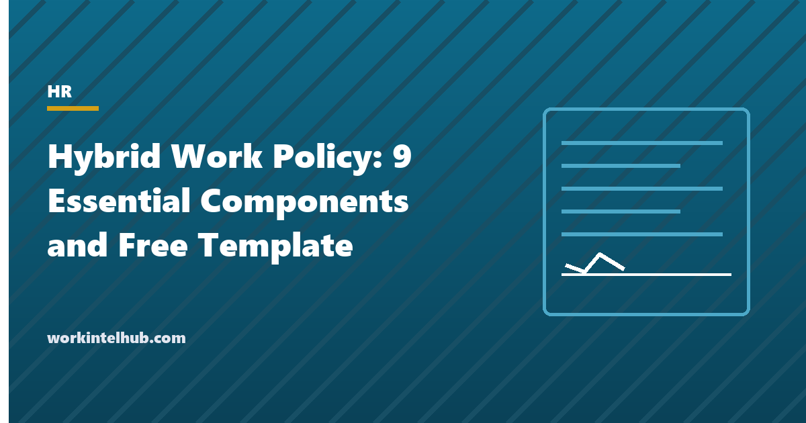

Hybrid Work Policy: 9 Essential Components and Free Template

A hybrid work policy settles the questions that otherwise get answered differently by every manager: who may work hybrid, how many days in the office and which, when people must be reachable, who pays for the home set-up, how performance is judged when half the team is not in the room, and what happens when someone quietly moves to another state. The hybrid schedule page compares the schedule models; this page covers the policy that governs them.
Nine components are set out below with what each should say, followed by the legal points that trip policies up and a template with the nine sections, an eligibility and schedule register, and an individual hybrid agreement. The remote work policy covers fully remote arrangements, and the remote work agreement is the individual document for those.
Download the templates
Free files: Word, Excel and PDF
Three files, free, no email required. Word to edit, Excel to track, PDF to print or share.
Templates open in Microsoft Word, Excel, Google Docs and Sheets, LibreOffice and any PDF reader. Free to use and adapt for your organisation.
The nine components
| Component | What it should say |
|---|---|
| Eligibility | Which roles and employees may work hybrid, how eligibility is decided and reviewed, and that the arrangement is not a contractual right unless stated. |
| Schedule and office days | The model (fixed days, anchor days, team days, alternating weeks), how many office days are required, who sets them, and how changes are requested. |
| Core hours and availability | The hours employees must be reachable regardless of location, response-time expectations, and calendar norms. |
| Workspace, equipment and expenses | What the company provides, what the employee provides, the home workspace standard, and the expense or stipend arrangement, including state reimbursement laws. |
| Security and data | Device, network and document rules at home and in public places, and what happens if a device is lost. |
| Communication and meetings | Which channels for what, meeting norms when some people are remote, and documentation expectations. |
| Performance and measurement | That performance is measured on outcomes, not presence, what is measured, and how hybrid employees are kept visible for development and promotion. |
| Time, attendance and location | Time recording for non-exempt staff, where employees may work from (home address, other states, abroad), and tax and payroll consequences of location changes. |
| Review and withdrawal | How often arrangements are reviewed, on what grounds the company may change or end them, and the notice given. |
The legal points that trip hybrid policies
Reimbursement. Eleven states and DC require employers to reimburse necessary business expenses, and California and Illinois have applied this to home internet and phone for remote days; a stipend or a claims process in the policy avoids the claim. The expense reimbursement policy covers it. Non-exempt time. Hourly employees must record all hours worked at home, including the email at 9 pm; the policy says how, and the timesheet templates provide the means. Location. An employee who works from another state creates payroll tax, workers' compensation and employment law obligations there; the policy requires approval before a location change and records the primary remote address. Equality. Hybrid eligibility decided role by role is defensible; decided manager by manager it is a discrimination claim waiting for a pattern. Accommodation. Remote work can be a reasonable accommodation under the ADA regardless of the policy's eligibility rules; the policy should say requests are considered individually.
Making hybrid fair to the people not in the room
- Measure outcomes, not presence; the what to measure guide covers how.
- Run meetings for the remote participant: one person remote means everyone on camera, or the room is a second-class citizen generator.
- Document decisions in writing where remote staff can read them.
- Track promotion and development rates by work pattern; proximity bias shows up in the numbers within a year.
- Make office days worth attending: collaboration, not a quieter place to take video calls.
Rolling the policy out
- Decide the schedule model with the hybrid schedule calculator and check desk capacity on the register sheet.
- Write eligibility by role family and publish the list.
- Issue the policy, then an individual agreement for each hybrid employee with their days, core hours and remote address.
- Review arrangements at six months and annually; say in the policy that the company may change them with notice.
- Pair with the monitoring policy so what is tracked at home is stated, not discovered.
Key takeaways
- A hybrid policy needs nine components: eligibility, schedule, core hours, equipment and expenses, security, communication, performance, time and location, review.
- Reimbursement laws, non-exempt time recording and out-of-state location changes are the legal traps; the policy addresses each.
- Decide eligibility by role, measure outcomes not presence, and track promotion rates by work pattern.
- Issue the policy, then an individual agreement per hybrid employee, reviewed at six months.
Frequently asked questions
What should a hybrid work policy include?
Eligibility by role, the schedule model and required office days, core hours and availability, equipment and expense arrangements, security rules, communication and meeting norms, how performance is measured, time recording and permitted work locations, and how arrangements are reviewed and withdrawn. The template covers all nine.
How many office days should a hybrid policy require?
Two or three is the most common pattern, with anchor days chosen for collaboration. The number matters less than the reason: office days that exist for teamwork are attended; office days that exist for presence are resented. The hybrid schedule page compares the models.
Do employers have to pay for home office costs?
In eleven states and DC, necessary business expenses must be reimbursed, which has been read to include the business share of home internet and phone for employees required to work from home. Elsewhere it is policy. A monthly stipend is the simplest compliant approach.
Can an employee work from another state under a hybrid policy?
Only with approval, because working in another state creates payroll withholding, unemployment insurance, workers' compensation and employment law obligations there. The policy should require notice and approval before any change of primary work location.
What is the difference between a hybrid work policy and a remote work policy?
A hybrid policy governs employees who split time between the office and elsewhere, including office days and desk capacity. A remote work policy governs fully remote employees, with more on location, equipment and connection. Many organisations have one document with sections for each.